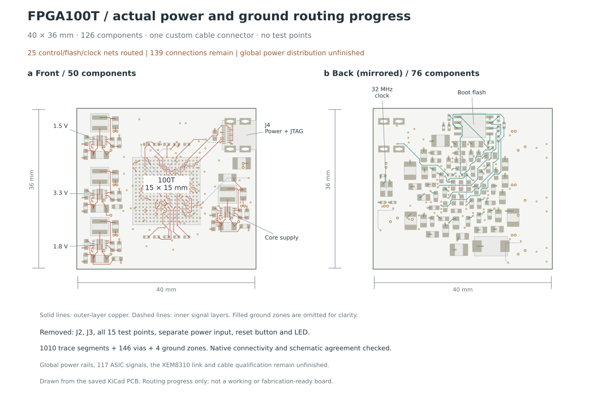
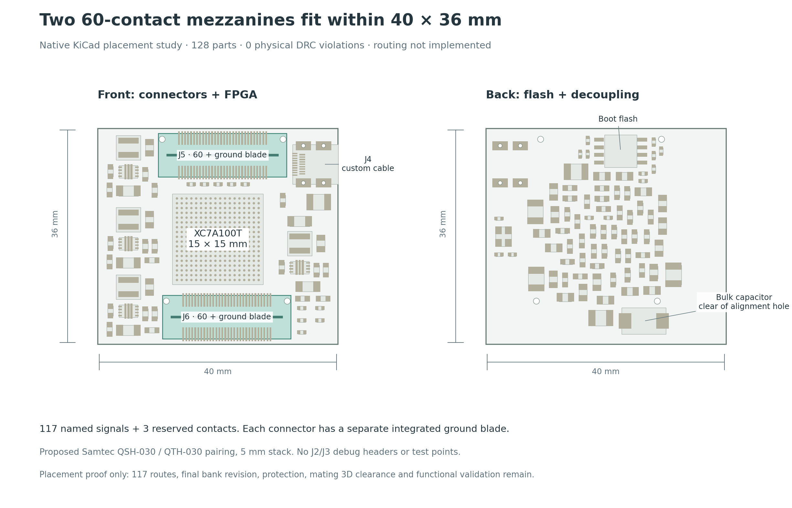

100T FPGA board
Not released for manufactureA compact acquisition board, from 117 ASIC signals to the XEM8310 receiver.
The connected core schematic and partial PCB routing are available for inspection. A separate placement study now includes both 60-pin ASIC mezzanines. Full signal assignment, power and data routing, and end-to-end verification remain in progress.
The actual PCB, both sides.
Native geometry and copper are shown below. Unfinished connections are a design gap, not a rendering omission.

Size boundary. The 40 × 36 mm outline is a core layout, not the final complete-board size. The separate mezzanine fit study below is promising, but complete power-protection and XEM8310 integration may change the outline. No claim of a global minimum is made.
Snapshot identity and remaining copper
- Native board SHA-256
- Loading
- KiCad version
- —
- Signal nets with no missing endpoints
- —
- Unconnected items by net
- —
These are KiCad connectivity counts, not a percentage complete. Power-side pull-up and strap connections need their rail copper. Routing must also meet return-path, impedance, power integrity and manufacturing requirements.
Two 60-pin mezzanines inside the same outline.
The 128-part candidate fits the connectors and revised 1206 input capacitors within 40 × 36 mm, with zero native physical DRC violations. It is intentionally unrouted: all tracks were removed and all 120 connector signal pads remain unassigned.
This is not the current core copper revision. The later C92/R122 bank-rail additions, cable damping/protection, mating-board 3D clearance and complete routing still need integration. Final size is not released.

One complete signal path.
The release target includes the entire chain. A bootable FPGA core alone does not satisfy it.
8 ASICs
88 output lines
+ 29 controls / clocks
100T board
Capture · timing · control
Packetization / link RTL
Custom cable
Data · power · JTAG
Type-D connector
XEM8310 → PC
Receiver · buffering
USB / host recording
What the core contains
- XC7A100T CSG324: 324 balls, 210 user I/O, 0.8 mm BGA pitch. Exact ordering grade remains a sourcing decision.
- Power: four TPS62135 converter circuits for core, auxiliary, configuration and ASIC I/O rails. Regulator input capacitors C3/C7/C11/C15 have been corrected to 22 µF, 25 V, 1206 parts after a DC-bias review. Rail assignments and physical power delivery still require qualification.
- Startup: 128 Mbit SPI flash, fixed SPI boot straps (M2:M1:M0 = 001), 32 MHz oscillator and dedicated JTAG.
- Reference: CP SOM ONE informs the power architecture. Its different FPGA package and routing are not a drop-in design.
Why the extra connectors disappeared
| Removed | Current replacement / consequence |
|---|---|
| J1 · power header | Power enters through the custom cable port. |
| J2 · JTAG header | JTAG and target-voltage reference use J4. |
| J3 · mode jumper | Fixed SPI mode resistors; dedicated JTAG remains available. |
| All test points | Smaller layout; assembly and bring-up must define access through the port or existing pads. |
| SW1, D1, R120 | Manual reset and indicator removed. No assumption of a fitted status LED. |
The retained flash supports independent cold boot; it has not been programmed or tested on this board. The XEM8310 is an FPGA module, not a conventional MCU. A receiver carrier/adapter and its firmware are still needed.
117 signals. A proposed connector map.
117 is the corrected logical signal budget. It does not include grounds, power, shielding or connector spare contacts.
ASIC ↔ 100T: 117 signals
Connector direction: two 60-pin mezzanines. Samtec QSH-030-01-L-D-A / QTH-030-01-L-D-A with a 5 mm mated stack is a proposed implementation; footprint, mating orientation and contact map are still under review. Dedicated ground blades are separate from the 120 signal contacts.
| Group | Count | Meaning |
|---|---|---|
| Shared controls | 9 | CHIP_RESET, AC_IN, IMP_TST, FE_RESET, SPI_LATCH, STIM_CLK, STIM_START, STIM_EN, STIM_CHB |
| Recording board clocks | 4 | One CLK per board |
| SPI data | 12 | 4× L/R for stimulation chips; 2× L/R for non-stimulation boards |
| ASIC outputs | 88 | 8 ASICs × 11 output lines |
| SPI clocks | 4 | Four additional SPI_CLK lines |
| Total | 117 | Corrected September 24 baseline |
The earlier interface deck expands 11 outputs into 8 DATA + returned CLK32MHz + READ + SYNC: 64 data and 24 timing/control outputs. Preserve that distinction when specifying timing.
One row per application signal ↓
Two-connector contact proposal ↓ · AC_IN / IMP_TST research ↓
Seven user I/O are currently reserved by flash, the oscillator and PUDC_B. The other 203 are unassigned. The arithmetic allowance after 117 is 86; this does not establish bank-voltage compatibility, clock routing or legal placement.
J4: custom powered Type-D link
| Contact | Current core net | Role |
|---|---|---|
| 1 | VCC_CFG_3V3 | Target-voltage reference |
| 2 / 15 / 17 / 18 | TMS / TDI / TCK / TDO | Dedicated target JTAG |
| 19 | LINK_12V | Proposed nominal 12 V input |
| 16 | GND | DC return |
| 4 / 7 / 10 / 13 / shell | GND | Pair shields / connector shell |
| 3/5 · 6/8 · 9/11 · 12/14 | Unassigned | Four reserved data pairs |
Custom electrical interface. Do not connect ordinary HDMI equipment. Contact numbers are physical Type-D contacts; cable continuity, orientation, return current and hot-plug protection need verification.
The XEM8310 receiver assembly will supply the custom cable through a designed carrier/adapter. The proposed carrier branch is 12 V ±5%, with a 0.60 A continuous load limit and a maximum 0.30 m custom cable. Voltage drop, fault protection and hot-plug behavior still require qualification. This does not assert that an unmodified XEM8310 can directly power this board.
The development proposal uses three LVDS data pairs plus one forwarded clock, with 12-bit packed samples. Exact XEM8310 contacts, timing closure, termination and the target-JTAG bridge still require implementation and verification. The module’s own JTAG does not automatically program this target. Read the source-backed development architecture.
What has actually been checked.
Checks below describe the downloadable snapshot. No result is a substitute for the missing full-board interfaces or a powered bench test.
| Check | Observed result | What it establishes / limit |
|---|---|---|
| Native project and netlist | — endpoints match | Exported schematic endpoints correspond to PCB pads. — schematic pages and local libraries included. |
| Native KiCad DRC | — geometry violations — schematic parity issues | Saved rule checks pass for routed geometry. — ignored checks and — exclusions. Connectivity and engineering qualification remain separate. |
| Copper connectivity | — unconnected items | — boot / configuration / clock signal nets routed. Local regulator routing and ground-plane work are implemented. Global rail distribution remains incomplete. |
| Schematic ERC | — open pins + — warnings | 203 unassigned FPGA I/O + 8 unassigned cable data contacts. Five bidirectional-symbol warnings concern CFGBVS/XADC ties; their circuit treatment is documented. This is not a clean completed schematic. |
| All 117 application signals | Contact proposal; FPGA mapping open | All 117 names appear in the proposed contact table. FPGA balls, bank constraints and mating-board continuity still need implementation and verification. |
| RTL / timing / data link | Not demonstrated | No complete 8-ASIC implementation, Vivado fit/timing proof, receiver link or end-to-end recording test is established by these CAD checks. |
| Power / signal integrity / DFM | Qualification pending | Load model, rail transients, cable current, BGA escape, approved stackup, return paths, thermal margin and assembler review remain required. |
| Built hardware | Not tested | No measured power-up, JTAG identification, cold boot or data capture from this design. |
Release requires the full board.
These are engineering gates, not a percentage estimate. Manufacturing starts only after the complete design passes review.
- Interface closure Open
Validate the proposed two 60-pin mezzanine footprints, mating stack and contact map, including ground blades and any power contacts; assign FPGA balls, bank voltages, clock-capable inputs, timing and startup behavior. ASIC / routing handoff: Howard, Zitong and Gerald.
- Receiver and powered cable Being designed
Implement the XEM8310 carrier/adapter, source current and protection, cable continuity/length contract, data protocol, termination and target-JTAG access. Verify throughput and current margins with the actual cable.
- Complete schematic and copper In progress
Include the upstream connector and all application/data nets; finish BGA escape, converter loops, power distribution, reference planes and controlled-impedance routing. Reassess the smallest feasible complete-board outline.
- Manufacturing review Not passed
Freeze exact purchasable parts, stackup and fabrication rules; close native ERC/DRC and netlist checks with reviewed exceptions; complete Vivado pin/timing, SI/PI, thermal and assembler DFM review. Only then export and independently inspect Gerbers, drills, BOM and placement files.
- Hardware acceptance Not started
Bring up current-limited power and rails, read JTAG ID, program and cold-boot flash, check clocks and all ASIC channels, then verify sustained XEM8310 → PC → disk recording with error counters and a reproducible test record.
Interface work still required
The engineering contact table allocates all 117 signals across the two 60-pin mezzanines, leaving three reserved contacts. It must be carried through the mating routing board, FPGA balls and constraints, with explicit ground and power handling. Samtec’s nominal 5 mm pair has 5.03 mm fully mated spacing; dual-connector orientation, assembly tolerances and electrical timing remain release checks.
Source research has not established AC_IN or IMP_TST electrical behavior. Existing reference wiring and unused historical FPGA inputs do not justify direct digital drive. The signal count, 100T package choice, XEM8310 direction and minimal-access preference are already recorded. Power architecture is assigned to engineering design and qualification.
Open the real design.
Use the complete ZIP for editing. Keep the project, hierarchical sheets and local libraries together.
These are review files, not fabrication outputs. No manufacturing package is released. Source views and reports are frozen to the board hash shown above; earlier audits retain their own dates and are not silently presented as current copper verification.
Design references and earlier decisions
- AMD UG470 — 7-series startup, SPI configuration and JTAG.
- AMD package pin inventory — original CSG324 CSV; project ball inventory.
- CP SOM ONE reference revision — power architecture and layout reference; different package and load.
- TI TPS62135 datasheet — converter limits and layout requirements.
- Opal Kelly XEM8310 documentation — selected downstream module and expansion-interface reference.
- Earlier FPGA review — retained 200T draft and 50T evaluation history. Its counts, candidates and dimensions are not this 100T design.
- Dated meeting records — preserve the decision trail; older KR260 and 132-signal proposals are historical.